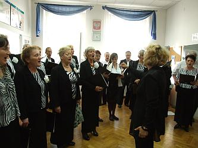
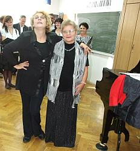
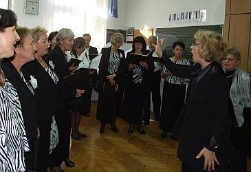
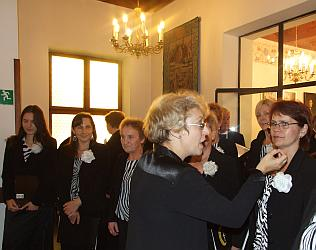
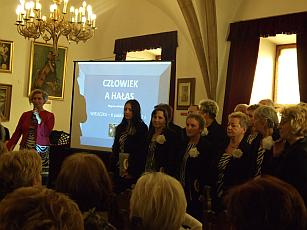
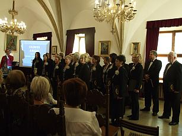

A tymczasem w Cameracie...
.
2012-10-06
Wszyscy radośni jak zwykle, przybywają na próbę.Zaczynamy przy akompaniamencie prof. Małgorzaty Westrych, naszej ulubionej akompaniatorki, która …
 
gdy nie gra na fortepianie dla Cameraty, to z nią śpiewa i to jak!!! Ale niestety tylko na próbie.

Idziemy spacerkiem w piękną, słoneczną sobotę do Muzeum Żup Krakowskich na koncert. Tam śpiewamy dla zaprzyjaźnionego UTW, który bardzo często nas zaprasza na swoje uroczystości. Jeszcze kilka uwag przed występem i zaczynamy.

Koncert krótki, ale bardzo się wszystkim podobał i został nagrodzony gromkimi brawami. Na koniec wszyscy zaśpiewali hymn braci studenckiej.
 

© Stowarzyszenie Muzyczne Chór Camerata Wieliczka